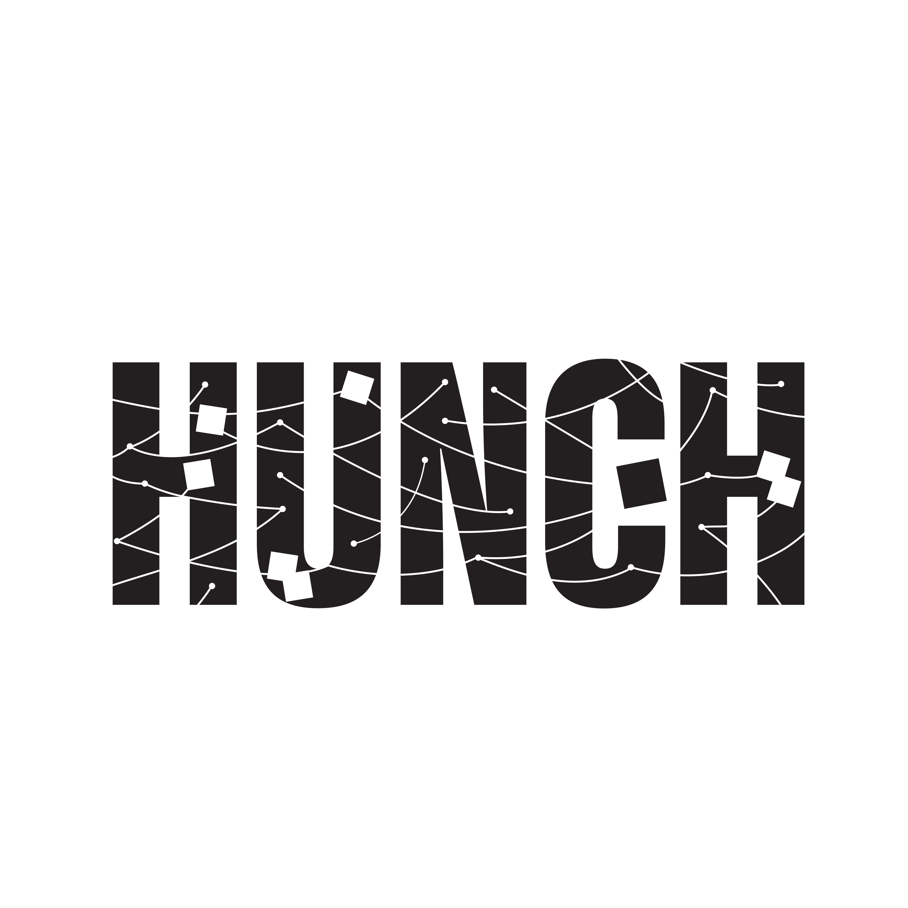
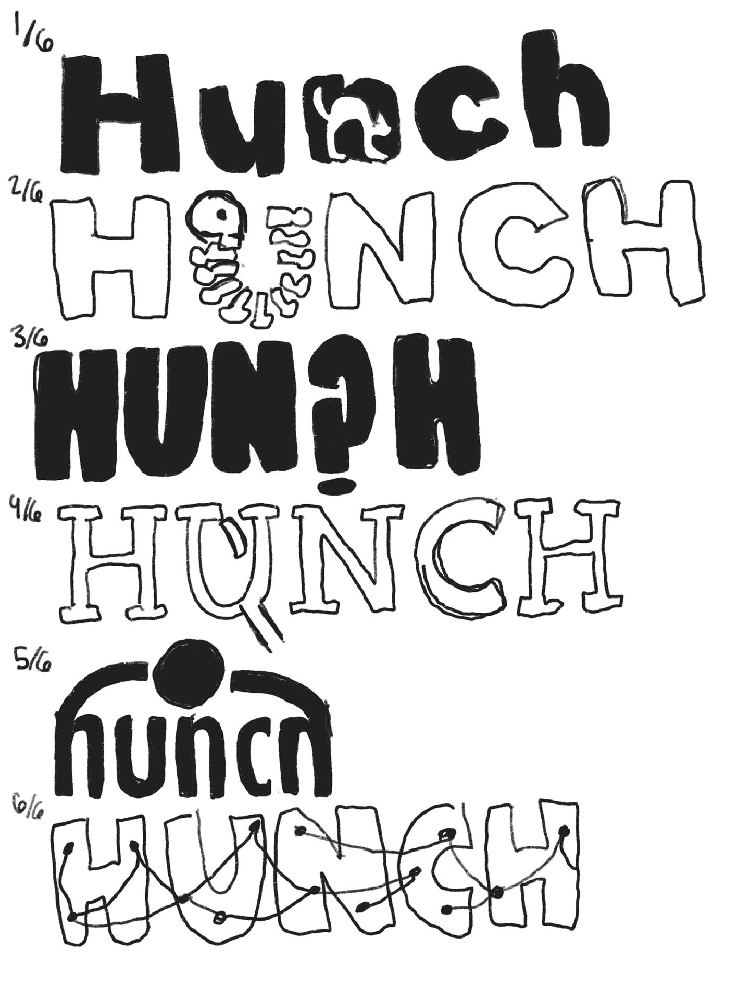

Case Study · Design · 2025
HUNCH – Typographic Interpretation
Using the word HUNCH, this piece visualizes the fragmented, instinctual thinking that drives intuition and deductive reasoning.



Concept
Design Approach
Inspired by detective logic boards, I scattered clues across a grid, connecting them with lines and forming visual tension. The slab serif font and structured base ground the chaotic spread of evidence.
Result
The final design evokes psychological deduction, with each letter acting as part of a larger mental map—turning typography into a visual metaphor for internal realization.